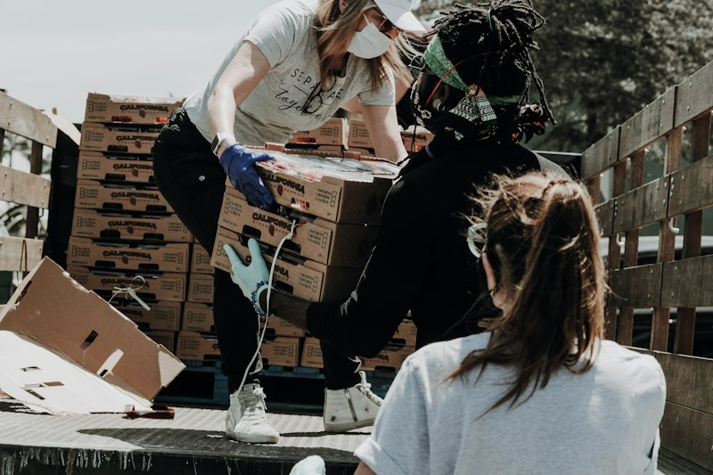
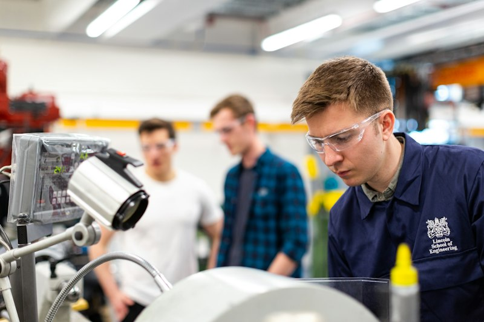

Nossos projetos são estruturados com base nos Objetivos de Desenvolvimento Sustentável (ODS) da ONU, atuando diretamente nas causas fundamentais da vulnerabilidade socioeconômica através da cooperação e do fortalecimento de vínculos.
Programas Ativos em 2026
Projeto Alimentando o Futuro
Área: Segurança Alimentar e Nutricional | Início: Março de 2018

Cultivo agroecológico em horta comunitária mantida pelas famílias do bairro.
Objetivo Geral
Erradicar a fome emergencial e fomentar práticas agroecológicas sustentáveis em áreas periféricas urbanas.
Ações Desenvolvidas
Entrega mensal de cestas verdes compostas por alimentos orgânicos da agricultura familiar local.
Criação e manutenção de duas hortas comunitárias autogeridas pelos próprios moradores.
Oficinas quinzenais de culinária saudável e reaproveitamento integral de alimentos.
Público Atendido
Atualmente beneficia 450 famílias cadastradas com renda per capita de até um quarto de salário mínimo.
Projeto Saber Mais: Educação e Tecnologia
Área: Educação Infantil, Juvenil e Cidadania Digital | Início: Agosto de 2020
Crianças no laboratório comunitário de inclusão digital.
Objetivo Geral
Superar a defasagem na aprendizagem escolar de crianças e preparar jovens para a era digital por meio de métodos pedagógicos ativos.
Ações Desenvolvidas
Tutoria de reforço em Língua Portuguesa e Matemática para alunos do 1º ao 9º ano.
Cursos de informática básica, navegação segura e introdução à programação web para adolescentes.
Biblioteca comunitária com acervo de mais de 1.500 livros infantojuvenis.
Público Atendido
Atende 320 estudantes matriculados na rede pública de ensino, em turnos matutino e vespertino.
Projeto Mãos na Roda: Capacitação e Renda
Área: Qualificação Profissional e Economia Criativa | Início: Fevereiro de 2022

Alunos participando de aula prática na oficina de marcenaria e costura sustentável.
Objetivo Geral
Capacitar adultos em situação de desemprego para a conquista de vagas formais de trabalho e estimular a abertura de microempreendimentos cooperativos.
Ações Desenvolvidas
Módulos técnicos em áreas de alta demanda: corte e costura, panificação artesanal, manutenção de computadores e assistente administrativo.
Aulas de educação financeira, precificação e marketing para pequenos negócios.
Feira mensal de economia solidária para comercialização de produtos produzidos pelos alunos.
Público Atendido
Capacita anualmente cerca de 200 alunos adultos, com prioridade para mães solo e chefes de família.
Cronograma e Metas Operacionais de 2026
Acompanhe o planejamento trimestral de metas de expansão para cada uma das frentes de atuação da organização:
Planejamento de Indicadores de Impacto Social para o ano de 2026
Projeto
Indicador Principal
Meta 1º Semestre
Meta 2º Semestre
Status Atual
Alimentando o Futuro
Famílias com cesta verde regular
500 famílias
600 famílias
Em andamento (450 atendidas)
Saber Mais
Crianças e jovens em oficinas
350 alunos
400 alunos
Em andamento (320 atendidos)
Mãos na Roda
Certificados emitidos
100 formados
150 formados
Concluída 1ª turma do ano
Voluntariado Geral
Novos voluntários capacitados
80 voluntários
120 voluntários
Inscrições abertas
Total Estimado de Impactados
1.030 beneficiários
1.270 beneficiários
Superando expectativas
Como Fazer Parte Dessas Histórias
Cada uma dessas iniciativas só é viável graças ao compromisso e à doação de talentos dos nossos voluntários. Veja as etapas para integrar nossa equipe:
Preencha o formulário de cadastro: informe suas habilidades e áreas de interesse.
Participe da roda de acolhimento: encontro online ou presencial para apresentação da equipe.
Capacitação introdutória: treinamento sobre nossos valores, proteção de dados e conduta ética.
Início das atividades: integração no projeto de sua preferência com acompanhamento contínuo.